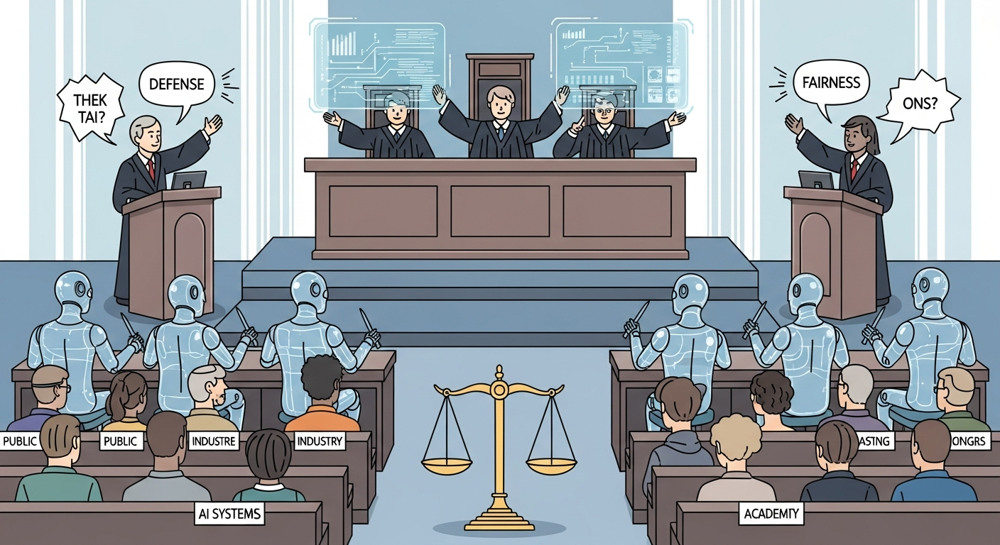

"The EU AI Act is in effect. ISO 42001 is being adopted. NIST AI RMF is becoming the standard. If you are not thinking about governance, you are building legal liability."
A General Counsel
Most firms have disaster recovery plans for infrastructure, but few plan for interpretation failures. A new strategic vulnerability emerges: the real single point of failure may be interpretation, not infrastructure. AI continuity planning asks: Can we still reason about the system if the model layer changes, becomes too expensive, degrades in quality, or disappears? Can another team, vendor, or model take over without breaking the system? This becomes critical in regulated, safety-critical, and strategically sensitive environments.
Governing AI products requires all three disciplines: AI PM defines the policies, compliance requirements, and ethical boundaries the product must respect; Vibe-Coding tests policy enforcement to see if rules actually work in practice; AI Engineering implements the controls, auditing, and reporting that demonstrate compliance.

Vibe-coding enables rapid testing of governance and policy enforcement mechanisms. Quickly prototype different policy rules, test boundary conditions, and explore edge cases where policy enforcement succeeds or fails. Vibe-coding policy testing helps you discover gaps in your governance approach before regulators do, ensuring your compliance frameworks actually work in practice rather than just on paper.
Governance policies need evidence, not just intentions. Use vibe coding to rapidly test policy enforcement against your eval suite. Generate edge cases that probe policy boundaries. Measuring actual policy compliance through evals is more defensible to regulators than relying on theoretical compliance claims.
Objective: Build AI products that are compliant with emerging regulations, trustworthy by design, and defensible when questions arise. Learn governance frameworks, implementation patterns, and documentation practices that demonstrate accountability.
Chapter Overview
This chapter covers governance and compliance for AI products. You learn governance operating models that fit your organizational context, how to implement NIST AI RMF and ISO 42001, release review checklists that ensure consistent evaluation, and accountability patterns including transparency documentation, explainability, and incident accountability. These practices protect your organization and build user trust.
Four Questions This Chapter Answers
- What are we trying to learn? How to build AI products that are defensible to regulators, accountable to users, and aligned with emerging compliance requirements.
- What is the fastest prototype that could teach it? Running your current AI product through a compliance checklist to identify gaps and prioritize remediation.
- What would count as success or failure? Governance practices that enable shipping AI features with confidence rather than uncertainty about regulatory risk.
- What engineering consequence follows from the result? Governance is not bureaucracy; it is risk management that enables rather than prevents innovation.
Learning Objectives
- Design governance operating models appropriate to your organization
- Implement NIST AI RMF and ISO 42001 requirements
- Build release review checklists that ensure consistent evaluation
- Create transparency documentation including model cards and data cards
- Implement accountability patterns that enable auditing
- Design explainability features appropriate to use case risk
Sections in This Chapter
Governance as Competitive Advantage
Strong AI governance is not just about avoiding regulatory penalties. It is a competitive advantage. Customers prefer AI products they can trust. Enterprise customers require compliance as a procurement condition. Organizations with strong governance can move faster because they have confidence their AI meets standards.
Role-Specific Lenses
For Product Managers
Governance requirements shape what AI features you can build and how. Understanding compliance needs helps you design features that are both useful and permissible, and helps you make the case for governance investment.
For Engineers
You implement governance requirements in code. Documentation standards, bias evaluation, audit logging, and transparency features are all engineering problems with specific technical solutions.
For Designers
Transparency and explainability have UX implications. How you communicate AI uncertainty, display confidence indicators, and explain AI decisions shapes user trust and appropriate reliance.
For Leaders
Governance is a strategic imperative. It enables regulatory compliance, builds customer trust, reduces liability, and creates the foundation for sustainable AI investment. The cost of governance is trivial compared to the cost of governance failure.
Bibliography
Frameworks and Standards
-
NIST. (2023). "AI Risk Management Framework."
The official NIST AI RMF documentation covering GOVERN and MAP functions for AI risk management.
-
ISO/IEC. (2023). "ISO/IEC 42001: AI Management System."
The international standard for AI management systems, providing certifiable requirements for AI governance.
EU AI Act
-
EU AI Act. (2024). "Artificial Intelligence Act."
The official EU AI Act text and guidance from the European Union.
Transparency and Accountability
-
Mitchell, M., et al. (2021). "Model Cards for Model Reporting." FAT* 2019.
The foundational paper introducing model cards as a standard for transparency documentation.
Vibe-Coding and AI Product Strategy
-
Apartsin, S. (2026). "The End of Software Engineering as We Know It." Bootcamp.
Key concepts: Economic singularity, Observe-Steer Loop, Disposable Evidence-Driven Architecture (DEDA), Post-Bug Engineering.
-
Apartsin, S. (2026). "The Strange Future of AI-Written Software." Bootcamp.
Key concepts: Cognitive lock-in, AI continuity planning, machine-mediated complexity, organizational debt.
-
Apartsin, S. (2026). "Stop Building, Start Steering." Bootcamp.
Key concepts: Observe-Steer Loop mechanics, judgment as the scarce resource, underspecification gap.
-
Apartsin, S. (2026). "AI Is Killing Vendor Lock-In." Bootcamp.
Key concepts: Translation economics, architecture as lease, intent as the valuable asset, portable monogamy.
-
Apartsin, S. (2026). "When AI Writes the Code, Documentation Changes Its Job." Bootcamp.
Key concepts: Documentation as intent, machine-readable constraints, trust records, three new documentation needs.
-
Apartsin, S. (2026). "Why Your AI Product Isn't Software." Towards AI.
Key concepts: Survivable failure design, feasibility as data metric, intelligence as variable marginal cost.
-
Apartsin, S. (2026). "AI Changes the Most Basic Assumption of Software Product Design." Bootcamp.
Key concepts: Build vs. fit problem, AI role spectrum, quality means something new.
-
Key concepts: Learning signals, data strategy vs. feature strategy, product as learning system.